Your library, on the air.
Lumae Radio turns a Raspberry Pi into an always-on radio for your home. It plays stations made from your own music, follows the energy of your day, and gives every song a rest before it comes back.
Lumae Radio is in beta. It's software for your own Raspberry Pi, with Navidrome or Jellyfin 12 and AudioMuse-AI, and it's always in Stealth. What you need
It follows the shape of your day.
At 14:00, the station looks for music around 70% energy.
Every hour has a target energy. The radio picks music that fits each moment, from the songs it has measured, so mornings ease in and afternoons lift. Move across the curve to see what the station looks for.
Illustration of the default curve. Weekends can get their own; Steady keeps one level all day.
A radio that knows your library.
Lumae on your phone is for you. Lumae Radio is for the room: the kitchen, the living room, the shop. It plays by itself all day, from the same servers, and your phone is only the remote.
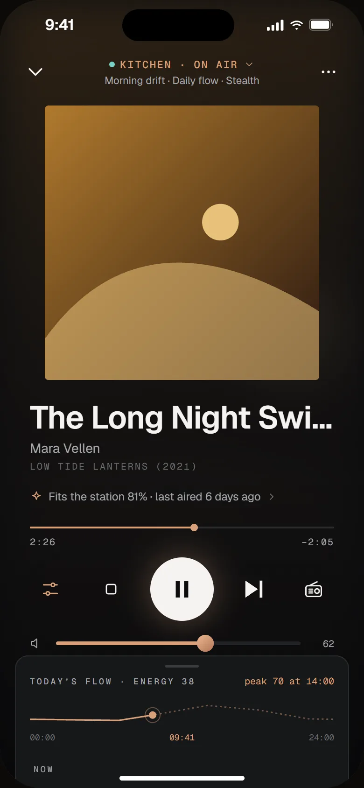
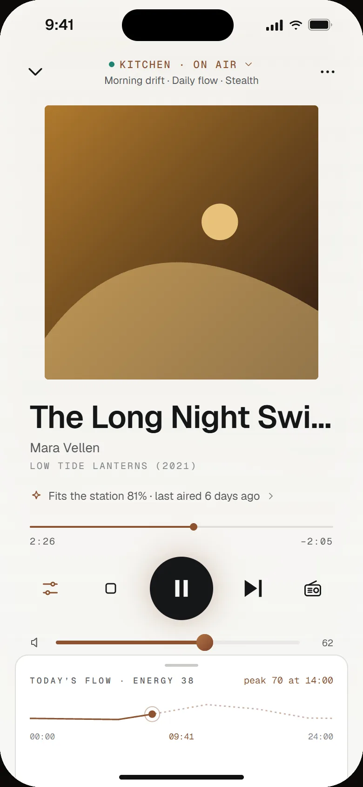
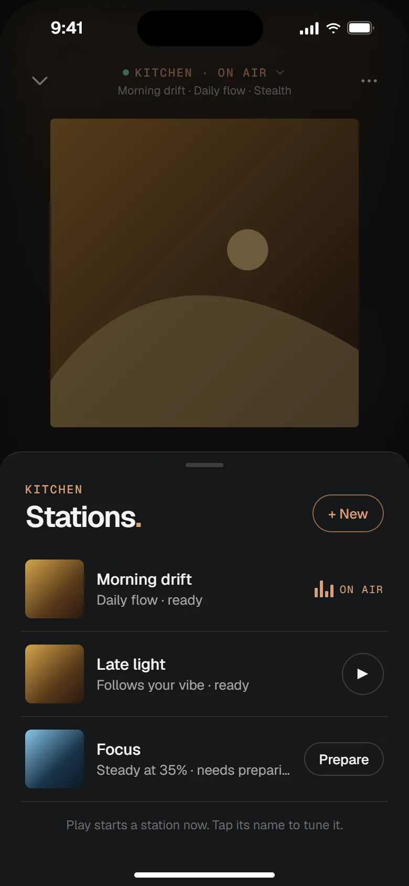
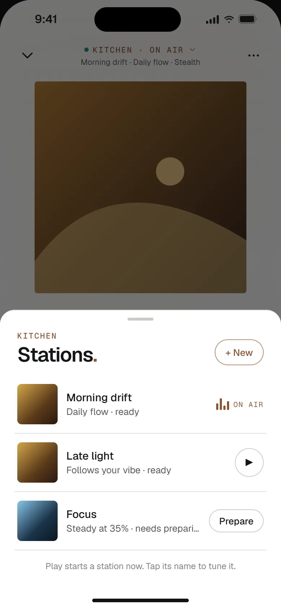
The remote in Lumae: what's on air, and the stations to switch to.
- Your server
- Navidrome or Jellyfin supplies the music and AudioMuse-AI the analysis, as for the app. The radio keeps its own copy of what it needs.
- Your Raspberry Pi
- Lumae Radio chooses every track, crossfades, and plays through a DAC board or USB DAC. It keeps going with your phone switched off.
- Your phone or browser
- Lumae finds the radio on your home network and becomes its remote. The radio also has its own web page for browsers at home.
What Lumae Radio does
Stations, not playlists.
A station is a sound, not a list. Start one from a Vibe on your phone, a song, a few seeds or a Vibe code, and the radio picks what fits, one track at a time, around the clock.
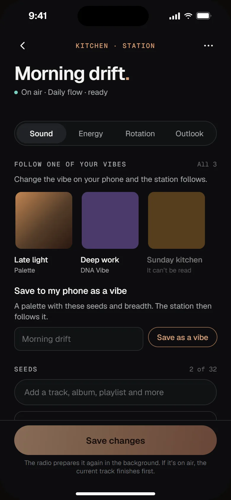
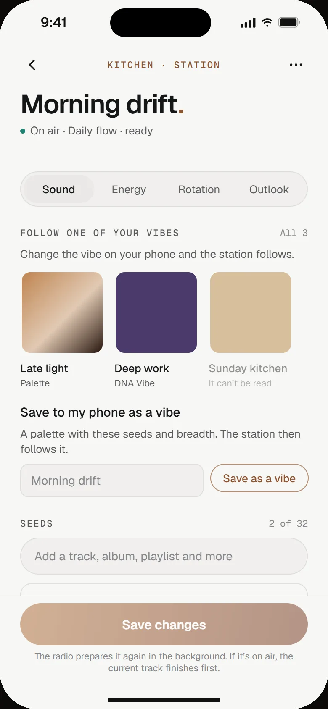
What the station sounds like.
- Follow one of your Vibes
- Pick a Palette or DNA Vibe. Change it on your phone and the station follows within about five minutes, after the current track.
- Or start from seeds
- Tracks, artists or albums from the radio's library, or the song your phone is playing.
- Narrow it by sound
- Ten traits, from danceability to atmosphere, can keep a station inside a range.
- Save it back
- Turn a station you like into a Vibe on your phone.
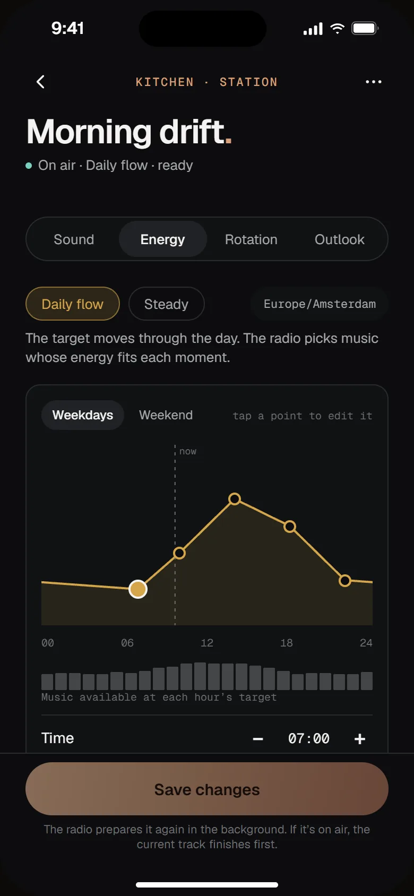
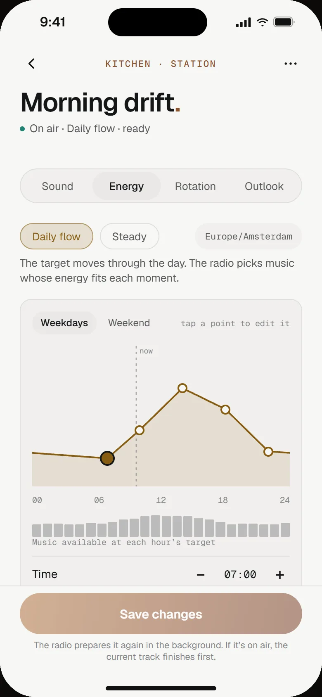
Calm at breakfast, lively in the afternoon.
- Daily flow
- Set a few points through the day and the station's target energy moves smoothly between them.
- Weekends
- Can get a curve of their own.
- Steady
- Keeps one energy all day, if that's what the room needs.
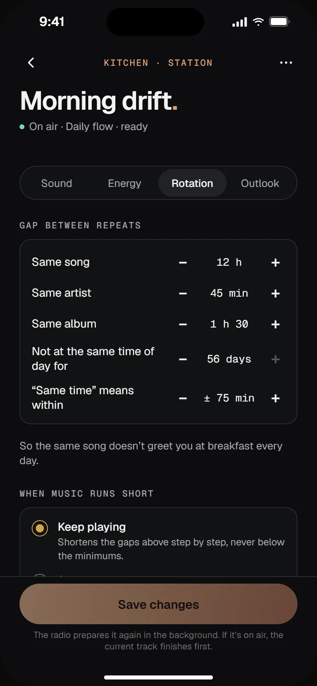
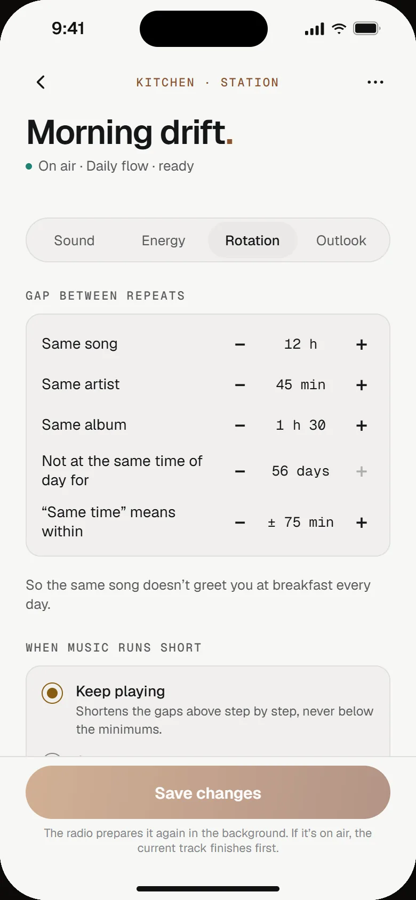
Rests between repeats.
The defaults, all adjustable per station:
- Same song
- 12 hours
- Same album
- 1 hour 30 minutes
- Same artist
- 45 minutes
It also avoids playing a song at the same time of day for up to 56 days, so the same song doesn't greet you at breakfast every morning.
When a station runs short of music, choose: keep playing with shorter rests, never below the minimums you set (the default), or go quiet rather than repeat sooner than you asked.
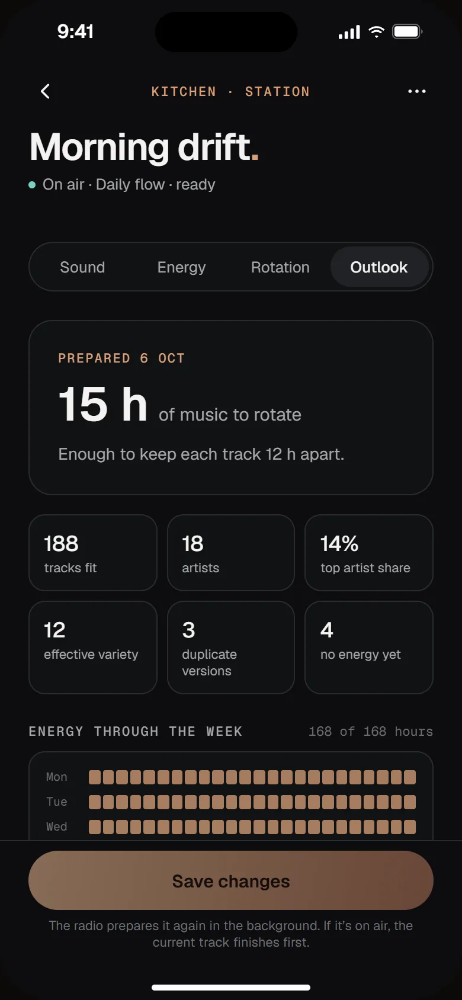
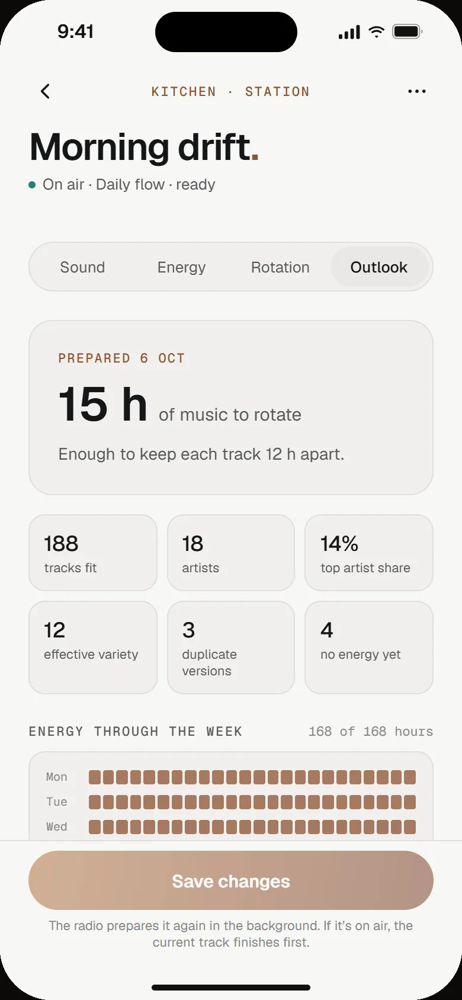
Know before it goes on air.
- How much music it has
- Hours to rotate, tracks and artists that fit, and how varied it really is.
- Energy through the week
- Hour by hour, so you can see where music runs thin.
- Suggestions
- To improve a station, and a seven-day preview of your edits before you save.
Preparing a station on a large library can take a while.
Your phone is the remote.
At home, a radio button appears on Lumae's Home. Tap it to see what's on air and why: how well it fits the station, when it last played, and how its energy compares to the moment.
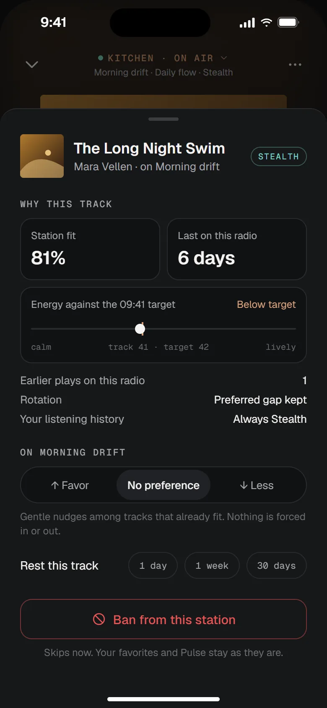
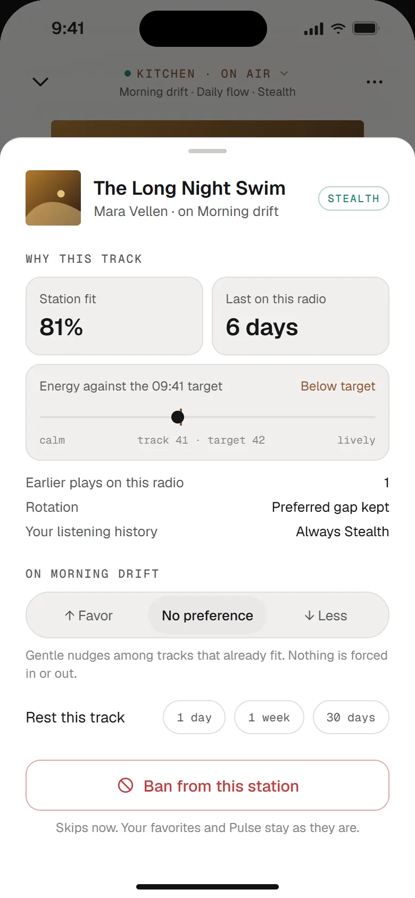
- Favor
- A gentle nudge toward a track that already fits. Nothing is forced in.
- Less
- A gentle nudge away. The track stays on the station, just plays less.
- Rest
- Give a track a day, a week or 30 days off.
- Ban
- Gone from this station, starting now. Your favorites and Pulse stay as they are.
Set it up once. Let it play.
It starts and stops by itself, rides out a dropped network, and comes back after a restart.
- Schedules
- Start a station by itself, and stop it again, on the days you choose.
- Ready if the network drops
- It aims to keep about six hours of upcoming music on its card, and syncs your library every six hours.
- Picks up after a restart
- A station that was playing starts again once its clock, music and sound output check out. A Stop stays a Stop.
- Home automation
- Give Home Assistant or your own scripts a key to the radio's HTTPS API that can only do what you allow. Revoke it any time.
Always in Stealth.
What the radio plays never becomes a listen in your history, a scrobble or a Pulse input. It keeps its own rotation history, only for rotation.
- Stays on your network
- HTTPS tied to the radio's own certificate from the first connection, an owner password, and keys you can revoke.
- Reads, never rewrites
- It changes nothing on your music server. The only thing it writes to AudioMuse-AI is a Vibe you save or edit from a station. Your server's own logs still show what it streamed.
- No cloud
- No account and no Lumae server. The radio, your servers and your phone talk to each other directly. Read how the radio handles your data
The rest is in the Radio guide.
Installing it, setting it up, Home Assistant and the API. Read the Radio guide
Install it, adopt it, press play.
-
Install
Put Raspberry Pi OS Lite (64-bit) on the Pi and install Lumae Radio over SSH with its signed installer.
-
Adopt
In Lumae, open Settings → Servers & accounts → Lumae Radio. Your phone finds the radio, adopts it, sends it your server details and starts the first sync.
-
Make a station
Pick a Vibe, a song or a few seeds, set the energy for the day, and press play.
Lumae Radio 0.6.16 November 24, 2026, for Raspberry Pi (64-bit), 45 MB
What you need
- Hardware
- The target is a Raspberry Pi 4 with 2 GB and about 60,000 tracks, not yet measured on real hardware; a large library may need 4 GB. Raspberry Pi OS (64-bit) on Debian 13, not the Legacy image, and a DAC board or USB DAC whose driver you set up.
- Servers
- Navidrome, or Jellyfin 12.0 or newer with Quick Connect on, plus AudioMuse-AI with Lumae Analysis (1.6.0 or newer for Jellyfin). To follow your Vibes: 1.4.0 or newer with its collection manager on, signed in as the same AudioMuse-AI user as your phone.
- Remote
- Lumae from the current beta build (1.0.0 (32) on Android, (26) on iPhone), or a browser on your home network once it trusts the radio's certificate.
Lumae Radio is in beta.
You can install it today. It runs on a Raspberry Pi with a HiFiBerry DAC+ HD; other boards and DACs, the 2 GB target with a 60,000-track library, long unattended runs and Jellyfin on a radio are still being checked. Expect rough edges, keep the Pi on a network you trust, and use the current Lumae beta build to set it up and control it.
Adopt a new radio soon after installing it, on a network you trust: until a radio has an owner, the first phone that adopts it wins.
Good to know
Can I buy one?
No. Lumae Radio is software you install on your own Raspberry Pi. Install the beta
Does it play to AirPlay, Bluetooth, Sonos or other rooms?
No. It plays through a DAC board or USB DAC on the Pi, connected to the speakers in that room.
Will it change my listening history or recommendations?
No. The radio is always in Stealth. Favor, Less, Rest and Ban only affect that station, never your own favorites, history or Pulse.
Does it need the internet?
It needs to reach your servers, and it sets its clock from the network before it plays. If the network drops, it plays on from the music saved on its card, about six hours by default; how well that holds up is still being tested.
Which files can it play?
FLAC, MP3, Ogg Vorbis, Opus and WAV. For AAC and ALAC files it asks Navidrome for a FLAC copy; that path is still being tested.
Can it run on my server instead of a Pi?
No. It's made for a Raspberry Pi with speakers in the same room, and that's the only setup being tested.
Start with the app.
The radio builds on Lumae. Join the beta, make a few Palettes or DNA Vibes you love, and they'll be ready to go on air.